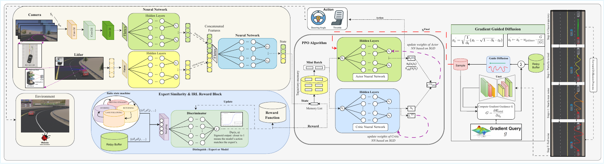

Performance Comparison
| Model | Mean Reward ↑ | Collisions/1k Steps ↓ | Success Rate (%) ↑ | BC Loss ↓ | Action Sim. (%) ↑ |
|---|---|---|---|---|---|
| Baseline (PPO + Uniform) | 85 | 0.63 | 78 | 17.1 | ~65 |
| Structured Replay | 120 (+41%) | 0.30 | 88 | 12.3 | ~75 |
| Generative Planner | 155 (+29%) | 0.15 | 92 | 13.0 | ~80 |
| IRL-DAL (Full) | 180 (+16%) | 0.05 | 96 | 7.4 | ~85 |
Architecture Overview
The IRL-DAL framework integrates four core components: a hybrid IL-IRL-RL training curriculum, energy-guided diffusion planner, learnable adaptive mask for contextual perception, and safety-aware experience correction mechanism.
Two-Phase Training Curriculum
Phase 1: Behavioral Cloning pre-training (20k steps) establishes expert-like behaviors. Phase 2: IRL-PPO fine-tuning (30k steps) with hybrid rewards enables exploration while maintaining safety.
Energy-Guided Diffusion Planner
Activated in high-risk states, generates safe short-horizon trajectories optimized by a multi-objective energy function balancing lane adherence, obstacle avoidance, and control smoothness.

Learnable Adaptive Mask (LAM)
Dynamically adjusts visual attention based on vehicle speed and LiDAR proximity cues, focusing on distant horizons at high speeds and near-field hazards in congested scenarios.
Related Work
Our work builds upon and extends recent advances in several key areas of autonomous driving research:
- Hybrid Learning: Combines Behavioral Cloning with PPO, extending GAIL-based IRL for dense reward shaping
- Diffusion Planning: First use of conditional diffusion models as on-demand safety layers for active RL policies
- Adaptive Perception: Lightweight attention mechanism guided by explicit contextual variables (speed, proximity)
- Safety Assurance: Experience correction mechanism that distills diffusion planner interventions into RL policy